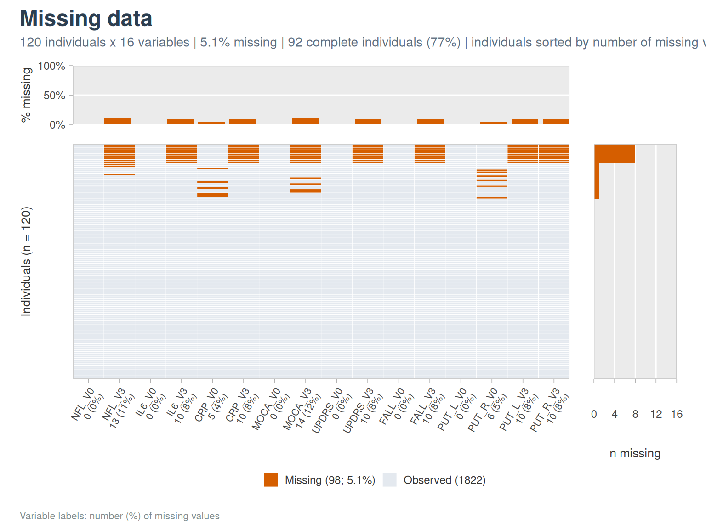
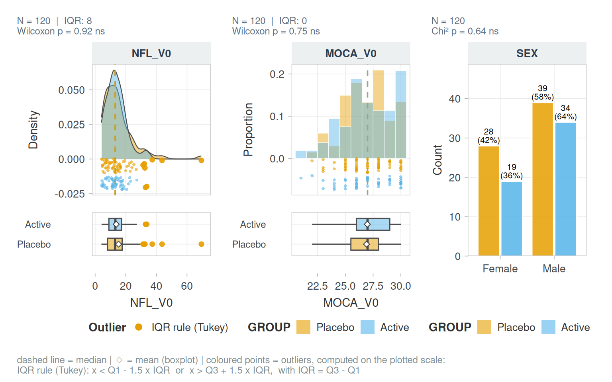

vernissage puts your cohort on show: it turns raw cohort data into clean variables, then into publication-ready figures and tables. It is built for clinical cohorts stored in wide format: one row per subject, one column per variable and visit, with names following the <ROOT>_<VISIT> convention (NFL_V0, NFL_V3).
The example cohort
Every vignette uses cohort_sim, a simulated cohort of 120 subjects in two arms, measured at baseline (_V0) and follow-up (_V3). It has the usual difficulties of real data: skewed biomarkers, values piled at a limit of detection, outliers, bounded scores and missing values.
str(cohort_sim)
#> 'data.frame': 120 obs. of 21 variables:
#> $ ID : chr "P001" "P002" "P003" "P004" ...
#> $ GROUP : Factor w/ 2 levels "Placebo","Active": 1 1 1 2 1 1 1 2 2 2 ...
#> $ SEX : Factor w/ 2 levels "Female","Male": 2 2 1 1 2 2 2 2 2 2 ...
#> $ AGE : num 80 82 67 72 51 69 61 64 69 73 ...
#> $ BMI : num 27.1 26.4 30.8 28.9 26 25.9 26.6 21.7 30.9 23.8 ...
#> $ NFL_V0 : num 26.8 6.6 4.9 7.7 14.7 19.4 7.6 12 17.2 17.5 ...
#> $ NFL_V3 : num NA 8.5 5.2 7.2 21 27.1 9.6 14.7 15.6 14 ...
#> $ IL6_V0 : num 2.59 1.04 1.2 1.81 0.83 1.01 0.76 0.9 0.52 2.25 ...
#> $ IL6_V3 : num NA 0.68 2.13 2.31 1.31 0.5 0.5 0.71 0.54 2.08 ...
#> $ CRP_V0 : num 2.8 1.21 5.63 0.97 2.37 ...
#> $ CRP_V3 : num NA 0.73 4.09 1.01 1.64 4.28 9.22 1.26 1.62 0.88 ...
#> $ MOCA_V0 : num 24 26 28 30 25 26 27 29 27 25 ...
#> $ MOCA_V3 : num NA 27 27 29 26 24 28 29 23 24 ...
#> $ UPDRS_V0: num 20 7 15 4 34 22 1 33 29 5 ...
#> $ UPDRS_V3: num NA 12 21 1 36 25 5 37 32 6 ...
#> $ FALL_V0 : Factor w/ 2 levels "No","Yes": 1 2 1 1 1 1 1 2 1 1 ...
#> $ FALL_V3 : Factor w/ 2 levels "No","Yes": NA 2 1 1 2 1 1 1 1 1 ...
#> $ PUT_L_V0: num 4.05 3.88 4.52 4.8 5.05 5.02 4.58 4.34 4.51 4.78 ...
#> $ PUT_R_V0: num 3.74 3.77 4.5 4.65 5.32 5.05 4.41 4.24 4.29 4.68 ...
#> $ PUT_L_V3: num NA 3.88 4.44 4.76 5.03 5 4.56 4.32 4.53 4.76 ...
#> $ PUT_R_V3: num NA 3.74 4.47 4.62 5.22 5.03 4.37 4.23 4.32 4.54 ...A first look in three lines
describe_cohort(cohort_sim, vars = c(AGE, SEX, BMI, NFL_V0, IL6_V0, CRP_V0, MOCA_V0, FALL_V0),
by = GROUP, id_col = ID,
blocks = list(Demography = c("AGE", "SEX", "BMI"),
Biomarkers = c("NFL_V0", "IL6_V0", "CRP_V0"),
Clinical = c("MOCA_V0", "FALL_V0")))| Cohort overview | |||||||||
| 120 subjects (120 unique identifiers) | 8 variables | 111 complete subjects (92%) | by GROUP | |||||||||
| Variable | Type | N | Missing | Overall (n = 120) |
Range |
GROUP
|
p | Distribution | |
|---|---|---|---|---|---|---|---|---|---|
| Placebo (n = 67) |
Active (n = 53) |
||||||||
| Demography | |||||||||
| AGE | Continuous | 120 | 0 (0%) | 67.0 [61.0; 71.0] | 45.0 to 86.0 | 68.0 [61.0; 71.0] | 66.0 [62.0; 70.0] | 0.55 | ▁▁▅▆█▅▂▂ |
| SEX | Binary | 120 | 0 (0%) | 0.64 | |||||
| Female | 47 (39%) | 28 (42%) | 19 (36%) | ████ | |||||
| Male | 73 (61%) | 39 (58%) | 34 (64%) | ██████ | |||||
| BMI | Continuous | 116 | 4 (3%) | 26.0 [23.5; 28.6] | 16.7 to 33.1 | 26.0 [23.4; 28.8] | 26.1 [23.6; 28.4] | 0.88 | ▂▂▄▇██▅▄ |
| Biomarkers | |||||||||
| NFL_V0 | Continuous | 120 | 0 (0%) | 13.0 [8.4; 17.3] | 4.1 to 69.4 | 13.0 [8.1; 17.6] | 13.2 [9.0; 17.2] | 0.92 | █▇▂▁▁ ▁ |
| IL6_V0 | Continuous | 120 | 0 (0%) | 1.1 [0.7; 1.7] | 0.5 to 7.8 | 1.0 [0.7; 1.5] | 1.3 [0.7; 2.1] | 0.17 | █▃▁▁▁▁ ▁ |
| CRP_V0 | Continuous | 115 | 5 (4%) | 1.9 [1.2; 3.4] | 0.1 to 31.3 | 2.0 [1.3; 3.8] | 1.8 [1.0; 3.1] | 0.27 | █▂▁▁▁ ▁ |
| Clinical | |||||||||
| MOCA_V0 | Discrete | 120 | 0 (0%) | 27.0 [25.8; 29.0] | 21.0 to 30.0 | 27.0 [25.5; 28.0] | 27.0 [26.0; 29.0] | 0.75 | ▁▂▂▄▆▄▅█ |
| FALL_V0 | Binary | 120 | 0 (0%) | 1 | |||||
| No | 96 (80%) | 54 (81%) | 42 (79%) | ████████ | |||||
| Yes | 24 (20%) | 13 (19%) | 11 (21%) | ██ | |||||
| Continuous / discrete: median [Q1; Q3] and range; categorical: n (%) of the observed values. Missing: n (% of subjects). Distribution: histogram of the observed values (8 bins) or share of each level. p: Wilcoxon / Chi², unadjusted (description only). | |||||||||
plot_na_map(cohort_sim, vars = c(NFL_V0:PUT_R_V3), id_col = ID)
plot_distribution(cohort_sim, c(NFL_V0, MOCA_V0, SEX), group = GROUP)
Families of functions
Function names share a prefix by family, so that autocompletion lists the family:
| Prefix | Purpose | Vignette |
|---|---|---|
read_cohort_csv(), clean_colnames(), rename_with_map()
|
import and names | Preprocessing |
visit_*() |
visit suffixes, long format, changes | Preprocessing |
outlier_*() |
robust outlier rules | Preprocessing |
transform_*() |
log, Box-Cox… | Preprocessing |
describe_*(), na_*(), cor_*(), pca_*()
|
description | Describing a cohort |
plot_*(), theme_*(), pal_*()
|
figures | Figures |
fmt_*(), label_*(), gt_*(), qmd_*()
|
formatting and reports | Tables and reports |
Selecting columns
Every argument that takes columns accepts character vectors (directly or through a variable), bare names or tidyselect helpers:
vars <- c("NFL_V0", "IL6_V0")
nrow(outlier_detect(cohort_sim, vars, id_col = ID))
#> [1] 10
nrow(outlier_detect(cohort_sim, c(NFL_V0, IL6_V0), id_col = "ID"))
#> [1] 10
nrow(outlier_detect(cohort_sim, tidyselect::ends_with("_V0") & tidyselect::where(is.numeric), id_col = ID))
#> [1] 21With a character vector, missing columns are dropped with a message; with bare names, an unknown column is an error.
Limits of detection and cut-offs (median split, tertiles…) are in the companion package lodestar.
Former names
The functions come from analysis scripts. Their former names (get_label(), paired_visits_plot(), radar_plot()…) still work and point to the new ones; see ?vernissage-deprecated. The former limit-of-detection and cut-off functions (make_cuts(), handle_lod()…) are in lodestar.